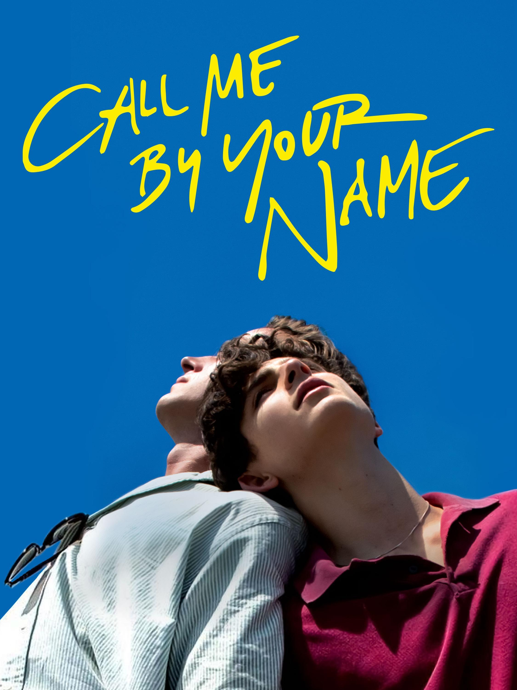

One night in his near-empty London tower block, screenwriter Adam has a chance encounter with mysterious neighbor Harry,
puncturing the rhythm of his everyday life. As a relationship develops between them, Adam finds himself drawn back to his childhood home, where his parents appear to
be living just as they were on the day they died 30 years ago.

Albert (Jeremy Irvine) and his beloved horse, Joey, live on a farm in the British countryside. At the outbreak of World War I,
Albert and Joey are forcibly parted when Albert's father sells the horse to the British cavalry. Against the backdrop of the Great War, Joey begins an odyssey full of danger,
joy and sorrow, and he transforms everyone he meets along the way. Meanwhile Albert, unable to forget his equine friend, searches the battlefields of France to find Joey and
bring him home.

It's the summer of 1983, and precocious 17-year-old Elio Perlman is spending the days with his family at their 17th-century villa in
Lombardy, Italy. He soon meets Oliver, a handsome doctoral student who's working as an intern for Elio's father. Amid the sun-drenched splendor of their surroundings, Elio and
Oliver discover the heady beauty of awakening desire over the course of a summer that will alter their lives forever.